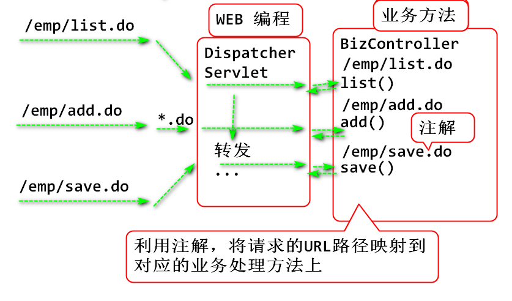

加载控制器类，读取每个标注了@RequestMapping的方法，并且读取注解上标注的URL
案例:
声明注解
@Retention(RUNTIME)
@Target(METHOD)
/**
* 标注在控制器方法上
* 用途：将请求url地址映射到当前的方法上
* 英文翻译： Request 请求 Mapping 映射
*/
public @interface RequestMapping {
//为注解定义参数
public String value();
}
在控制器上标注注解:
/**
* 控制器类， 用于封装业务功能，
*/
public class BizController {
/**
* 第一个业务功能，Hello World!
* @return 目标页面名称
*/
public String execute(HttpServletRequest request) {
System.out.println("Hello World!");
request.setAttribute("msg", "Hello");
return "hello";
}
/**
* 负责处理 /test/list.do 显示员工列表
* 在Web程序运行期间， 将/test/list.do请求映射到
* list() 方法上，也就是请求/test/list.do时候，
* 执行list()方法
*/
@RequestMapping("/test/list.do")
public String list(HttpServletRequest request) {
return "list";
}
/**
* 负责处理 /test/add.do 显示添加员工界面
*/
@RequestMapping("/test/add.do")
public String add(HttpServletRequest request) {
return "add";
}
// ...
}
利用Java反射API解析 @RequestMapping注解
public class Demo01 {
public static void main(String[] args)
throws Exception{
/*
* 解析 BizController类的@RequestMapping注解
*/
String className="mvc.BizController";
//动态加载类
Class cls = Class.forName(className);
//动态找到类的上全部方法
Method[] methods=cls.getDeclaredMethods();
//遍历全部方法，查找标注的 @RequestMapping 注解
for(Method method:methods) {
//利用RequestMapping.class类型找到的对象
//是 RequestMapping 类型的对象，包含value方法
RequestMapping ann=method.getAnnotation(
RequestMapping.class);
if(ann!=null) {
//调用注解对象上的 value方法就能取到标注的值
String val = ann.value();
System.out.println(val);
System.out.println(method);
}
}
}
}
控制器RequestMapping注解的目的是将用户的请求映射到对应的业务方法：

代码：
/**
* Handler 处理器
* 请求处理器，用处理用户请求
* 封装控制器对象和控制器上的业务方法
*/
public class RequestHandler {
private Object controller;
private Method method;
public RequestHandler() {
}
public RequestHandler(
Object controller, Method method) {
super();
this.controller = controller;
this.method = method;
}
public Object getController() {
return controller;
}
public Method getMethod() {
return method;
}
@Override
public String toString() {
return "RequestHandler [controller=" + controller + ", method=" + method + "]";
}
}
用于解析 控制器 类将请求URL和控制器方法的对应关系缓存到Map中，并且提供根据url找到对应控制器方法，并且执行控制方法的功能
代码：
public class HandlerMapping {
/**
* map 用于映射 请求 path 到对应的请求处理器
* 如：将 /emp/list.do 映射到 bizColtroller.list()方法
*/
private Map<String, RequestHandler> map=new HashMap<>();
/**
* 用于根据 path 执行对应控制器方法
* @param path 请求路径
* @param request 执行控制器时候的参数
* @return 控制器执行以后的返回值，一般是目标JSP页面
*/
public String execute(String path,
HttpServletRequest request)
throws Exception {
RequestHandler handler = get(path);
Method method = handler.getMethod();
Object controller = handler.getController();
Object val = method.invoke(
controller, request);
String value = (String)val;
return value;
}
public RequestHandler get(String path) {
return map.get(path);
}
/**
* 初始化方法：解析控制器中的注解，将注解和注解
* 标注的方法添加到 map中
* @param className 控制器类名
*/
public void init(String className)
throws Exception{
Class cls = Class.forName(className);
Method[] methods = cls.getDeclaredMethods();
Object controller = cls.newInstance();
for(Method method:methods) {
RequestMapping ann = method
.getAnnotation(RequestMapping.class);
if(ann!=null) {
//找到注解上标注的路径
String path=ann.value();
//创建请求处理器对象，封装控制器对象和方法
RequestHandler handler=
new RequestHandler(
controller, method);
//请求路径和对应的“请求处理器”添加到map
map.put(path, handler);
System.out.println(path+":"+handler);
}
}
}
}
测试案例：
public class Demo02 {
public static void main(String[] args)
throws Exception {
/**
* 测试 HandlerMapping的初始化方法是否可用
*/
HandlerMapping mapping = new HandlerMapping();
mapping.init("mvc.BizController");
//执行 /test/add.do 对应的方法
String val = mapping.execute("/test/add.do", null);
System.out.println(val);
}
}
将配置控制器类名登记到XML文件中，这样可以灵活配置控制器的类名，以及控制器数量等
编写配置文件 resources/beans.xml：
<?xml version="1.0" encoding="UTF-8"?>
<beans>
<bean class="mvc.BizController"></bean>
</beans>
ContextConfigListener
/**
* 初始化 URL 到 控制器 的映射表
*/
public class ContextConfigListener implements ServletContextListener {
/**
* 读取 beans.xml 配置文件，
* 解析配置文件中定义的控制器类
* 将控制器类的url映射到对应的控制器方法
* @param xml
* @return 包含url到控制器方法映射关系的
* HandlerMapping对象
*/
public HandlerMapping loadControlers(String xml)
throws Exception {
SAXReader reader = new SAXReader();
InputStream in = ContextConfigListener.class
.getClassLoader().getResourceAsStream(xml);
System.out.println(in);
Document doc = reader.read(in);
in.close();
Element root = doc.getRootElement();//beans
List<Element> list=root.elements("bean");
HandlerMapping mapping = new HandlerMapping();
for(Element e:list) {
//在bean元素上获取class属性的值作为类名
String className=e.attributeValue("class");
System.out.println(className);
//利用类名初始化 HandlerMapping 中的map
mapping.init(className);
}
return mapping;
}
public void contextInitialized(
ServletContextEvent e) {
try {
ServletContext ctx = e.getServletContext();
//HandlerMapping mapping=new HandlerMapping();
//mapping.init("mvc.BizController");
HandlerMapping mapping=loadControlers(
"beans.xml");
String path = ctx.getContextPath();
ctx.setAttribute("root", path);
ctx.setAttribute("handlerMapping", mapping);
System.out.println("初始化了handlerMapping");
}catch(Exception ex) {
ex.printStackTrace();
throw new RuntimeException(ex);
}
}
public void contextDestroyed(ServletContextEvent arg0) {
}
}
测试：
public class Demo04 {
public static void main(String[] args)
throws Exception {
/**
* 测试: 读取配置文件，初始化 HandlerMapping
*/
ContextConfigListener l =
new ContextConfigListener();
HandlerMapping mapping=
l.loadControlers("beans.xml");
}
}
配置监听器：
<listener>
<listener-class>mvc.ContextConfigListener</listener-class>
</listener>
根据用户的URL请求执行对应的 控制器，处理软件功能：
/**
* 单一前端控制器
* 负责接收请求，处理与HTTP协议有关逻辑
* 同时处理 get 和 post请求
* 为了增加广泛的实用性， 可以处理任何的*.do 请求
* 将 请求URL设置为 *.do
*/
public class DispatcherServlet extends HttpServlet {
private static final long serialVersionUID = 1L;
protected void doGet(
HttpServletRequest request,
HttpServletResponse response) throws ServletException, IOException {
try {
//创建 HandlerMapping 对象
//找到对应的业务方法，执行业务方法
//HandlerMapping mapping = new HandlerMapping();
//mapping.init("mvc.BizController");
//从ServletContext获取已经创建并初始化完成的
//HandlerMapping 对象，这样可以避免每次都初始化
//可以提高软件的性能
HandlerMapping mapping=(HandlerMapping)
getServletContext().getAttribute("handlerMapping");
//获取用户发起的请求
String pth = request.getServletPath();
System.out.println(pth);
//处理编码问题
request.setCharacterEncoding("UTF-8");
//执行 URL 路径对应的业务方法
String target=mapping.execute(pth, request);
//target代表需要显示是目标网页，
//约定target是以 redirect:为前缀
//则进行重定向，如果控制器返回的字符串
//以 redirect: 为开头，则重定向到
//redirect: 以后的URL地址
if(target.startsWith("redirect:")) {
String path = target.substring(9);
response.sendRedirect(path);
}else {
String path = "/WEB-INF/jsp/"+target+".jsp";
request.getRequestDispatcher(path)
.forward(request, response);
}
}catch(Exception e) {
e.printStackTrace();
//抛出一个 ServletException，这个异常是
//作用是，将异常e抛给Web容器，Web容器会
//显示 500 错误页面到浏览器
throw new ServletException(e);
}
}
protected void doPost(HttpServletRequest request, HttpServletResponse response) throws ServletException, IOException {
doGet(request, response);
}
}
配置：
<servlet>
<description></description>
<display-name>DispatcherServlet</display-name>
<servlet-name>DispatcherServlet</servlet-name>
<servlet-class>mvc.DispatcherServlet</servlet-class>
</servlet>
<servlet-mapping>
<servlet-name>DispatcherServlet</servlet-name>
<url-pattern>*.do</url-pattern>
</servlet-mapping>
添加控制器方法并且测试：
@RequestMapping("/test/hello.do")
public String hello(HttpServletRequest request) {
request.setAttribute("msg", "HI");
return "hello";
}
// ...
导入包:
<dependency>
<groupId>org.dom4j</groupId>
<artifactId>dom4j</artifactId>
<version>2.1.1</version>
</dependency>
<dependency>
<groupId>commons-dbcp</groupId>
<artifactId>commons-dbcp</artifactId>
<version>1.4</version>
</dependency>
<dependency>
<groupId>mysql</groupId>
<artifactId>mysql-connector-java</artifactId>
<version>5.1.47</version>
</dependency>
<dependency>
<groupId>junit</groupId>
<artifactId>junit</artifactId>
<version>4.12</version>
</dependency>
<dependency>
<groupId>jstl</groupId>
<artifactId>jstl</artifactId>
<version>1.2</version>
</dependency>
复制软件组件:
添加 emp.EmpContoller 控制器类
public class EmpController {
@RequestMapping("/emp/list.do")
public String list(HttpServletRequest request) {
EmpDao dao = new EmpDao();
List<Emp> list = dao.findAll();
Map<Integer, String> names=new HashMap<>();
for (Emp emp : list) {
names.put(emp.getEmpno(), emp.getEname());
}
//利用request对象将数据共享到JSP页面
request.setAttribute("list", list);
request.setAttribute("names", names);
//转发的员工列表页面
return "list-emp2";
}
@RequestMapping("/emp/add.do")
public String add(HttpServletRequest request) {
EmpDao dao = new EmpDao();
List<Emp> mgrs = dao.findMgrs();
request.setAttribute("mgrs", mgrs);
return "add-emp";
}
@RequestMapping("/emp/save.do")
public String save(HttpServletRequest request) {
try {
request.setCharacterEncoding("UTF-8");
String ename=request.getParameter("ename");
String mgrId=request.getParameter("mgr");
String date =request.getParameter("hiredate");
String deptId=request.getParameter("deptno");
String salarys=request.getParameter("salary");
String comms = request.getParameter("comm");
//数据类型转换: 将字符串转换为目标数据类型
SimpleDateFormat fmt=
new SimpleDateFormat("yyyy-MM-dd");
int mgr = Integer.parseInt(mgrId);
Date hiredate = new Date(
fmt.parse(date).getTime());
int deptno = Integer.parseInt(deptId);
double salary = Double.parseDouble(salarys);
double comm = Double.parseDouble(comms);
//保存到数据库
Emp emp = new Emp(0, ename, mgr, hiredate, deptno, salary, comm);
EmpDao dao = new EmpDao();
int n = dao.save(emp);
if(n==1) {
//设置绝对重定向路径
String url= request.getContextPath()+"/emp/list.do";
return "redirect:"+url;
}else {
//失败
request.setAttribute("message", "添加失败!");
return "message";
}
}catch(Exception e) {
e.printStackTrace();
throw new RuntimeException(e);
}
}
@RequestMapping("/emp/delete.do")
public String delete(HttpServletRequest request) {
String no = request.getParameter("empno");
//请自行打桩测试接收到的参数是否有效
int empno = Integer.parseInt(no);
//调用EmpDao删除数据
EmpDao dao = new EmpDao();
int n = dao.delete(empno);
if(n==1) {
//重定向到 员工列表页面, 显示结果
String path=request.getContextPath()+
"/emp/list.do";
return "redirect:"+path;
} else {
//转发到message.jsp显示错误消息
request.setAttribute("message", "删除失败");
return "message";
}
}
@RequestMapping("/emp/edit.do")
public String edit(HttpServletRequest request) {
String no = request.getParameter("empno");
int empno = Integer.parseInt(no);
EmpDao dao = new EmpDao();
Emp emp = dao.findByEmpno(empno);
List<Emp> mgrs = dao.findMgrs();
request.setAttribute("mgrs", mgrs);
request.setAttribute("emp", emp);
return "edit-emp";
}
@RequestMapping("/emp/update.do")
public String update(HttpServletRequest request) {
try {
request.setCharacterEncoding("UTF-8");
String no = request.getParameter("empno");
String ename=request.getParameter("ename");
String mgrno=request.getParameter("mgr");
String hire=request.getParameter("hiredate");
String dept=request.getParameter("deptno");
String sly =request.getParameter("salary");
String com =request.getParameter("comm");
int empno = Integer.parseInt(no);
int mgr = Integer.parseInt(mgrno);
//java.sql.Date 提供了将字符串转换为日期的方法
Date hiredate = Date.valueOf(hire);
int deptno = Integer.parseInt(dept);
double salary = Double.parseDouble(sly);
double comm = Double.parseDouble(com);
Emp emp = new Emp(empno, ename, mgr,
hiredate, deptno, salary, comm);
EmpDao dao = new EmpDao();
//更新数据
int n = dao.updateEmp(emp);
if(n==1) {
String path=request.getContextPath()+
"/emp/list.do";
return "redirect:"+path;
} else {
request.setAttribute("message",
"更新失败！");
return "message";
}
} catch (Exception e) {
e.printStackTrace();
throw new RuntimeException(e);
}
}
}
添加 emp.UserContoller 控制器类
public class UserController {
@RequestMapping("/user/login.do")
public String login(HttpServletRequest request) {
//读取表单参数
String name = request.getParameter("name");
String password = request.getParameter("password");
String save = request.getParameter("save");
// 访问数据层，检查用户信息
UserDao dao = new UserDao();
User user = dao.findUserByName(name.trim());
//将用户名保存在 request中
request.setAttribute("name",name);
//String contextPath = request.getContextPath();
//request.setAttribute("root", contextPath);
//如果没有找到用户信息，表示用户名是错误的
if(user==null) {
//转回到登录页面显示错误消息
request.setAttribute("message",
"用户名或者密码错误");
return "login";
}
//找到用户信息，则判断密码是否正确
//哪个变量不可能为null放到前面
if( user.getName().equals(name) &&
user.getPassword().equals(password)) {
//如果密码相等， 则可以登录
//将登录结果保存在 session
HttpSession session = request.getSession();
session.setAttribute("loginUser", user);
//转发到消息页面显示登录成功消息
request.setAttribute("message", "登录成功");
return "message";
}
//执行到这个位置？密码不一致的情形
request.setAttribute("message",
"用户名或者密码错误");
return "login";
}
@RequestMapping("/user/start-login.do")
public String startLogin(HttpServletRequest request) {
return "login";
}
}
配置 beans.xml
<?xml version="1.0" encoding="UTF-8"?>
<beans>
<bean class="mvc.BizController"></bean>
<bean class="emp.EmpController"></bean>
<bean class="emp.UserController"></bean>
</beans>
更新 所有JSP页面，将链接增加 .do
更新 AccessFilter
/**
* 访问控制过滤器：只有登录的用户才能通过访问
*/
public class AccessFilter implements Filter {
@Override
public void doFilter(
ServletRequest request,
ServletResponse response,
FilterChain chain)
throws IOException, ServletException {
//转换request和response对象的类型，这样可以
//使用更多的API方法
HttpServletRequest req=(HttpServletRequest)request;
HttpServletResponse res=(HttpServletResponse)response;
HttpSession session = req.getSession();
User loginUser =
(User)session.getAttribute("loginUser");
if(loginUser==null) {
System.out.println("没有登录，转到登录");
//没有登录，重定向到登录页面，不执行后续链节
String login=req.getContextPath()+
"/user/start-login.do";
res.sendRedirect(login);
return; //不执行后续链节
}
//执行后续链节，就是执行后续的Servlet
System.out.println("登录成功，继续执行");
chain.doFilter(req, res);
}
@Override
public void init(FilterConfig arg0) throws ServletException {
}
@Override
public void destroy() {
}
}
部署测试 GoodLuck!